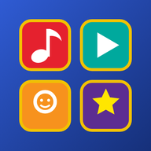

Keine App gefunden.
Die Aufrufe werden datenschutzfreundlich mit GoatCounter gezählt – ohne Cookies und ohne persönliche Daten. · Datenschutz

Meine Musik-AppsKleine Anwendungen, die direkt im Browser laufen – ohne Installation. Zu jeder App gibt es eine kurze Beschreibung und eine ausführliche Anleitung.
So entstehen meine Apps: mein KI-Betriebssystem → · Vorher – Nachher: warum Gestaltung zählt →
Keine App gefunden.
Die Aufrufe werden datenschutzfreundlich mit GoatCounter gezählt – ohne Cookies und ohne persönliche Daten. · Datenschutz